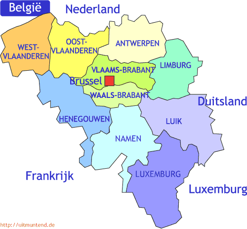

Over ons
België
België, of voluit het Koninkrijk België, is een West-Europees land dat ligt aan de Noordzee en grenst aan Nederland, Duitsland, Luxemburg en Frankrijk. Het land is 30.528 km² groot en heeft een bevolking van iets meer dan 11 miljoen inwoners. De belangrijkste stad is Brussel, hoofdstad van België en bestuurlijk centrum van de Europese Unie.
Het land heeft drie officiële talen: ongeveer zestig procent van de bevolking spreekt Nederlands, vooral in Vlaanderen, veertig procent spreekt Frans, vooral in Wallonië, en minder dan een procent spreekt Duits, in de Oostkantons. De culturele en linguïstische diversiteit van het land heeft door een opeenvolging van staatshervormingen geleid tot een complex politiek systeem, waarbij in principe de grondgebonden bevoegdheden - zoals economie, werkgelegenheid en openbare werken - liggen bij de Gewesten (het Vlaamse, het Waalse en het Brusselse), en de persoonsgebonden materies - zoals onderwijs, cultuur en welzijn - bij de Gemeenschappen (de Vlaamse, de Franse en de Duitstalige), met een overkoepelende federale overheid voor het hele grondgebied, bevoegd voor onder meer defensie, justitie en de sociale zekerheid.
Belgique
La Belgique, en forme longue le Royaume de Belgique, en néerlandais België et Koninkrijk België, en allemand Belgien et Königreich Belgien, est un pays d'Europe de l'Ouest, bordé par les Pays-Bas, l'Allemagne, le Luxembourg, la France et la mer du Nord. Politiquement, il s'agit d'une monarchie constitutionnelle fédérale à régime parlementaire. Elle est un des six pays fondateurs de l'Union européenne dont elle accueille, dans sa capitale Bruxelles, les principales institutions (le Parlement européen, le Conseil de l'Union européenne et la Commission européenne), ainsi que celles d'autres organisations internationales comme l'OTAN. La Belgique couvre une superficie de 30 528 km² avec une population de plus de onze millions d'habitants.
Située à mi-chemin entre l'Europe germanique et l'Europe romane, la Belgique abrite principalement deux groupes linguistiques : les néerlandophones, membres de la Communauté flamande (qui constitue 57 % de la population), et les francophones, membres de la Fédération Wallonie-Bruxelles (qui représente 43 % des Belges).
Belgien
Das Königreich Belgien (niederländisch Koninkrijk België, französisch Royaume de Belgique) ist ein Staat in Westeuropa. Es liegt an der Nordsee und grenzt an die Niederlande, Deutschland, Luxemburg und Frankreich. Belgien zählt rund elf Millionen Einwohner auf einer Fläche von 30.528 Quadratkilometern.
Seit der Unabhängigkeit 1830 und Verfassungsgebung 1831 ist Belgien eine konstitutionelle Erbmonarchie (siehe auch belgische Monarchie). Der Norden des Landes mit den Flamen ist niederländisches, der Süden mit den Wallonen französisches Sprachgebiet. Brüssel ist gemischtsprachig. Im Osten sind Hochdeutsch und westmitteldeutsche Mundarten verbreitet.
